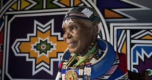

Hello, pessoinha! Espero que esteja bem! Vamos começar nossa revisão para o simulado do segundo semestre!
A expressão!

Expressão é a manifestação de ideias e pensamentos que, na arte, são potencialmente poéticos, carregados de inspiração e emoção. Recursos expressivos são elementos que dão poder ao artista, para que o mesmo crie uma obra que seja capaz de transmitir mensagens. Esses recursos são essenciais na arte?
Rafael Sanzio

Qual é o período da história da arte em que Rafael Sanzio viveu e produziu suas obras?
Pina Bausch
Medo, pânico, desejos, sonhos e ilusões faziam parte dos espetáculos de ____________ de Pina Bausch, assim denominados porque uniram elementos desses dois universos, ambos tendo como referência a realidade humana.
Esther Mahlangu
Cada artista possui sua poética e escolhe linguagens e recursos que melhor expressam e comunicam suas ideias. Esther Mahlangu é uma artista ndebele que ficou conhecida no Brasil por criar a estampa de um modelo de sapatilha para uma marca de calçados de plástico, com imagens características de seu povo.
Quanta expressão!
A principal característica dos trabalho de Esther Mahlangu é o uso de:
Opa, não foi dessa vez! Vamos tentar de novo?
Parabéns! Você mandou muito bem!
Quer jogar mais uma vez?
Arrasou! Até a próxima!